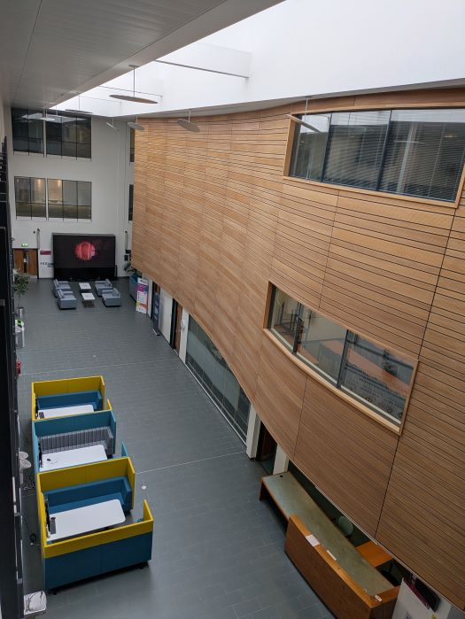
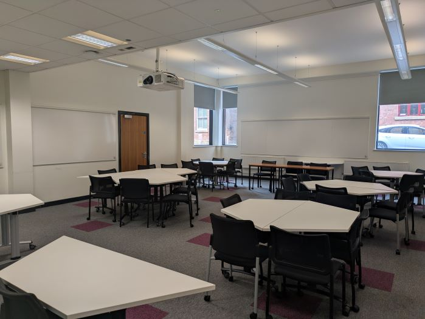

Facilities
The College is located in the attractive and pleasantly refurbished Building. The building houses computing laboratories, and lecture/tutorial rooms. It has its own catering facilities and student work areas. There is also a car park to the back of the building.
Our building has space of 9500m², houses over 240 staff and provides teaching space for more than 1600 students.

Facilities Include:
- Wi-Fi Technology
- Pool teaching rooms, including classrooms to teach from 25 - 80 students
- Specialist faculty facilities
- A double height lecture theatre at first and second floor level
- Dramatic three-storey glass open atrium
- Meeting rooms
- Office accommodation
- Specialist IT facilities
- Reception desk area
- Catering outlet
- Parking for disabled badge holders
- Cycle racks
- Gallery